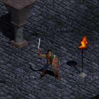
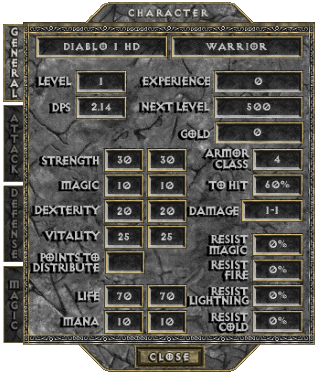
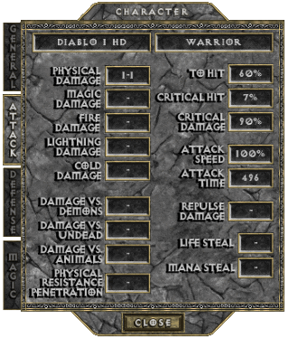
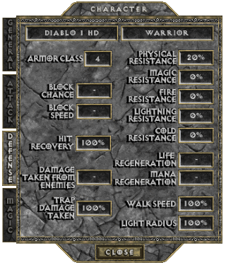
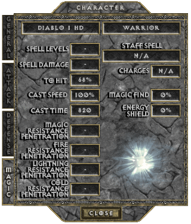
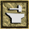
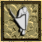

THE WARRIOR
The Warriors of the lands of Khanduras are well trained in all of the weapons of war. Ranging from crusading paladins to unscrupulous mercenaries, Warriors can be found wherever there is conflict amongst their countrymen. Many of these adventuresome men joined with King Leoric´s army and went to battle against the Northern kingdom of Westmarch. As the fires of war burned themselves out, these Warriors returned home to find their kingdom in shattered disarray.
Dark rumours of the mysterious demise of King Leoric abound and the evil that lurks within his Cathedral has drawn many Warriors to Khanduras seeking fortune and glory. Though they were warned by the people of Tristram, a few of these brave souls have ventured into the chaotic labyrinth beneath the earth. Whether they are driven by valor, honor, madness or greed, new Warriors arrive in Tristram every day, ready to challenge the dark unknown that awaits them beneath the earth.
The Warrior is one of the strongest and toughest of the available Classes, and he excels in the art of close combat. His primary weakness is that his extensive physical training has left little time to develop more than a rudimentary knowledge of magic. The extended periods of time that most Warriors spend away from their homes and civilization requires that they learn of repair their own weapons and armour, and their skill will surelly match the talent of a true blacksmith.

BASE STATS
Per character level: 5 Attribute Points +2 Life +1 Mana +3% To Hit (Spell)
+0.25 Physical Damage (only at levels 5 to 60, levels 1 to 4 make up 1-1 innate damage)
-0.2% Critical Hit Chance (only at levels 1 to 10, after 10 it stops decreasing)
-0.5% Critical Hit Damage (only at levels 1 to 30, after 30 it stops decreasing)
Physical Resistance drops from 20% to 6% at level 2, to 2% at level 3, to 0% at level 4
Per point in Strength: +0.18 Physical Damage +0.5% Critical Hit Damage (min 37 points)
Per point in Dexterity: +0.18 Physical Damage +0.125% Critical Hit Chance (min 37 points) +0.5% To Hit (Weapon) +0.2 Armor Class
Per point in Vitality: +2 Life
Per point in Magic: +1 Mana +0.5% To Hit (Spell)
   
PREFERRED WEAPONS
text
See THIS PAGE for more information about the Attack Speed of Swords.
PREFERRED ARMOR
text
See THIS PAGE for more information about Block Chance of Shields.
SKILLS
| Name | Icon | Info |
|---|---|---|
| ITEM REPAIR (available from start) |  | Effect: Utility skill that repairs one equipable item to it's full durability, without cost and instantly Cooldown: 5 min |
| CLEAVE (from Character Level 8) | Effect: Slash attack that hits up to 3 targets, the one in front and two others from each adjacent side To Hit (Weapon): +12% (+1% per Character Level from level 11) Damage: +10% (+0.5% per Character Level from level 10) Cost: 4.3 Mana (+0.125 per Character Level from level 11) Synergy: Strength: Damage: +0.(1)% | |
| VALIANT STRIKE (from Character Level 16) | Effect: Formidable attack that can knockback enemies, and also increases your defense for 3 sec Armor Class: +21 (+??? per Character Level from level ) Damage: +25 (+??? per Character Level from level ) To Hit (Weapon): +22% (+???% per Character Level from level ) Cost: 4.5 Mana (+??? per Character Level from level ) Synergy: Strength: Damage: +??? | |
| SHIELD WALL (from Character Level 24) | Effect: Defensive buff that toughens the user, but it requires an equiped shield to be cast and lasts 16 sec Physical Resistance: +15% Damage Taken from Enemies: -4 (+??? per Character Level from level ???) Attacker Takes 3 Damage (+0.15 per Character Level from level 26) Block Chance: +30% (+0.65% per Character Level from level 26) Cost: 15.5 Mana (+??? per Character Level from level ???) Cooldown: 2 min Synergy: Strength: Damage Taken from Enemies: -??? Attacker Takes ??? Damage | |
| CHARGE (from Character Level 32) |  | Effect: Thrust attack that does bonus damage based on distance, bonus applies for a max 10 square distance Damage (per square): +25% (+1% per Character Level from level 24) To Hit (Weapon): +28% (+3% per Character Level from level 24) Cost: 11 Mana (+1 per Character Level from level 24) |